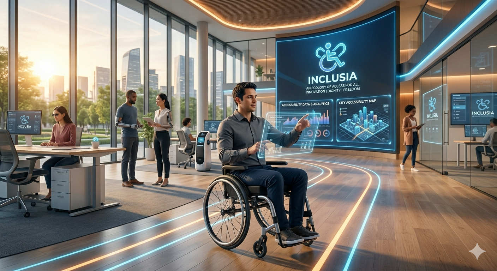
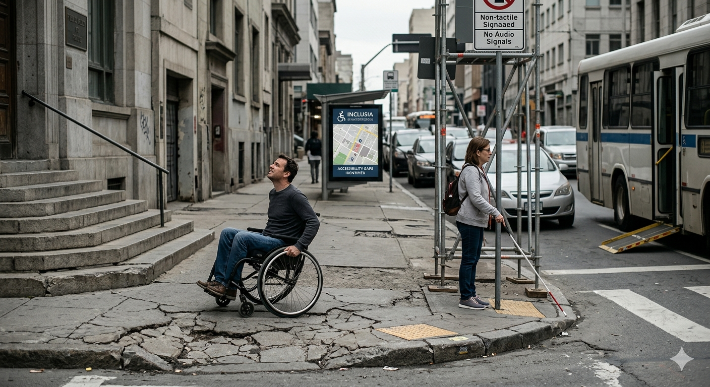
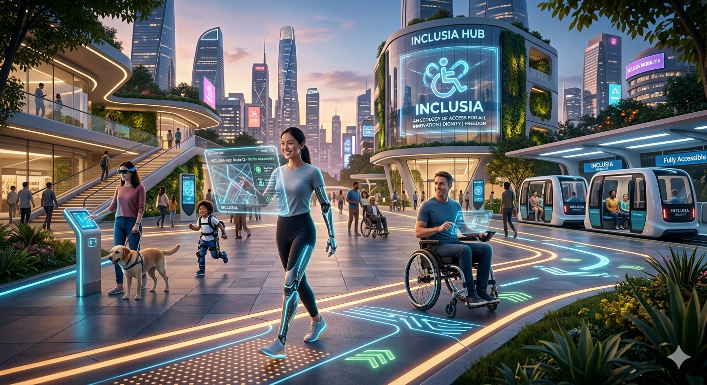

-

Fundador de INCLUSIA
Detrás de cada iniciativa hay una historia. Camilo fundó INCLUSIA convencido de que la inclusión es posible cuando se actúa con empatía y propósito.
-

Barreras que aún persisten
La ausencia de infraestructura accesible limita la independencia de miles. Documentar estas realidades es el primer paso para transformarlas.
-

El futuro de INCLUSIA
Trabajamos hacia un futuro donde la accesibilidad sea un estándar universal, no una excepción, y donde cada persona pueda participar plenamente.
Personas apoyando INCLUSIA
Detrás de cada avance en accesibilidad hay personas comprometidas que escuchan, aprenden, colaboran y actúan para generar un cambio real. Cada iniciativa suma en la construcción de un entorno más justo e inclusivo. Este carrusel reúne ejemplos de cómo la inclusión se vive y se impulsa en distintos ámbitos: sociales, digitales y físicos, demostrando que el progreso es posible cuando se trabaja en conjunto.